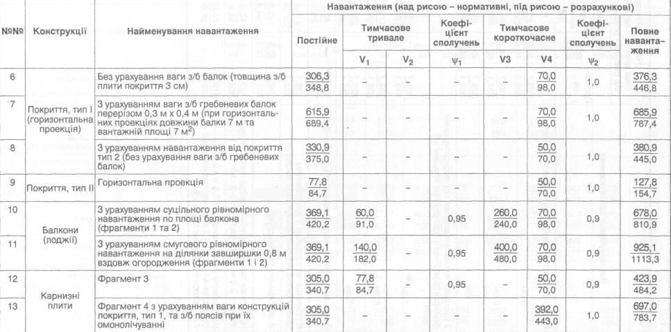

Необхідно описати веб-сторінку з таблицею конструкцій та навантаження на них.
Таблиця виглядає наступним чином
| №№ | Конструкції | Найменування навантаження | Навантаження (над рисою - нормативні, під рисою - розрахункові) | |||||||
|---|---|---|---|---|---|---|---|---|---|---|
| Постійне | Тимчасово тривале | Коефіцієнт сполучень | Тимчасово короткочасне | Коефіцієнт сполучень | Повне навантаження | |||||
| V₁ | V₂ | Ψ₁ | V₃ | V₄ | Ψ₂ | |||||
| 6 | Покриття, тип I (горизонтальна проекція) | Без урахування ваги з/б балок (товщина з/б плити покриття 3 см) | 306,3/348,8 | - | - | - | - | 70,0/98,0 | 1,0 | 376,3/446,8 |
| 7 | З урахуванням ваги з/б гребеневих балок перерізом 0,3 м * 0,4 м (при горизонтальних проекціях довжини балки 7 м та вантажній площі 7 м²) | 615,9/689,4 | - | - | - | - | 70,0/98,0 | 1,0 | 685,9/787,4 | |
| 8 | З урахуванням навантаження від покриття тип 2 (без урахування ваги з/б гребеневих балок) | 330,9/375,0 | - | - | - | - | 50,0/70,0 | 1,0 | 380,9/445,0 | |
| 9 | Покриття, тип II | Горизонтальна проекція | 77,8/84,7 | - | - | - | - | 50,0/70,0 | 1,0 | 127,8/154,7 |
| 10 | Балкони (лоджії) | З урахуванням суцільного рівномірного навантаження по площі балкона (фрагменти 1 та 2) | 369,1/420,2 | 60,0/91,0 | - | 0,95 | 260,0/240,0 | 70,0/98,0 | 0,9 | 678,0/810,9 |
| 11 | З урахуванням смугового рівномірного навантаження на ділянки завширшки 0,8 м вздовж огородження (фрагменти 1 та 2) | 369,1/420,2 | 140,0/182,0 | - | 0,95 | 400,0/480,0 | 70,0/98,0 | 0,9 | 925,1/1113,3 | |
| 12 | Карнизні плити | Фрагмент 3 | 305,0/340,7 | 77,8/84,7 | - | 0,95 | - | 50,0/70,0 | 0,9 | 3423,9/484,2 |
| 13 | Фрагмент 4 з урахуванням ваги конструкцій покриття, тип 1, та з/б поясів при їх омонолічуванні | 305,0/340,7 | - | - | - | - | 392,0/443,0 | 1,0 | 697,0/783,7 | |